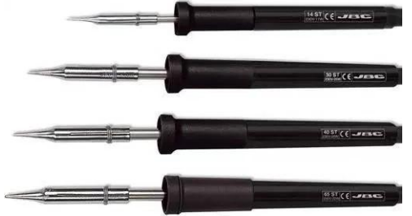
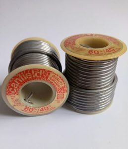
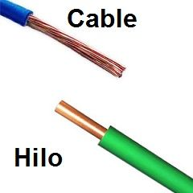
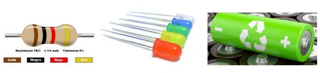

Materiales y Herramientas
Herramienta para soldadura
Una de las herramientas fundamentales en cualquier taller de electrónica es el soldador de componentes electrónicos, su principal función es unir los componentes entre sí o a las placas de circuito impreso, garantizando, sobre todo, un contacto eléctrico adecuado.
- Partes del Soldador:
- Punta: Es la parte que se calienta y se utiliza para realizar las soldaduras.
- Mango: Es la sección que se sostiene para manejar el soldador de manera cómoda y segura.
- Cable: Este es el cable de alimentación que conecta el soldador a la corriente eléctrica.
- Soporte para Soldador: El soporte para soldador es un dispositivo diseñado para sostener el soldador cuando no está en uso. Esto ayuda a prevenir accidentes y mantiene la punta caliente alejada de superficies inflamables.
- Pinzas y Alicates:
Las pinzas y los alicates son herramientas útiles para manipular componentes pequeños y cables. Las pinzas te permiten sostener piezas diminutas mientras sueldas, mientras que los alicates son ideales para cortar y doblar cables.
- Cortador de Cables:
El cortador de cables es una herramienta esencial para preparar los cables que vas a soldar. Te permite cortar los cables a la longitud deseada y eliminar el aislamiento de los conductores.

(SENA, nd)

Materiales:
1. Estaño
Además del soldador, es esencial contar con estaño para realizar las soldaduras, es importante evitar los pequeños rollos de mala calidad que se encuentran en tiendas de bricolaje.
- Es preferible usar estaño específico para soldadura electrónica, que tenga alma de resina y un diámetro de no más de 1 mm.
- Este debe tener un brillo plateado, nunca mate, aunque un rollo de 100 gramos de buena calidad cueste alrededor de 6 euros, su durabilidad y efectividad lo justifican.
- Este tipo de estaño es una aleación de 60% de estaño y 40% de plomo, con un interior hueco que contiene resina, la cual actúa como decapante al calentarse, facilitando la unión de las superficies metálicas al solidificarse.
- No se debe usar cualquier tipo de estaño para soldar componentes electrónicos.
2. Cables de diferentes tipos:
Tipos de Cables:
- Cables de Hilo Sólido: Están compuestos por un único alambre grueso dentro de una cubierta aislante. Son más rígidos y se utilizan mejor en conexiones que no requieren movimiento.
- Cables de Hilos Trenzados: Formados por múltiples hilos finos trenzados entre sí, también dentro de una cubierta aislante. Son más flexibles y son ideales para conexiones que necesitan moverse o doblarse.

3. Componentes Electrónicos Básicos:
Para practicar la soldadura, utilizaremos varios componentes electrónicos fundamentales, como resistencias, LEDs y baterías, estos elementos son esenciales para construir circuitos básicos.
- Resistencias: Limitan la cantidad de corriente que circula a través de un circuito, protegiendo así otros componentes.
- LEDs (Diodos Emisores de Luz): Son pequeñas luces que se encienden cuando la corriente pasa a través de ellas.
- Baterías: Proporcionan la energía necesaria para el funcionamiento del circuito.

(TeamBots, 2024)